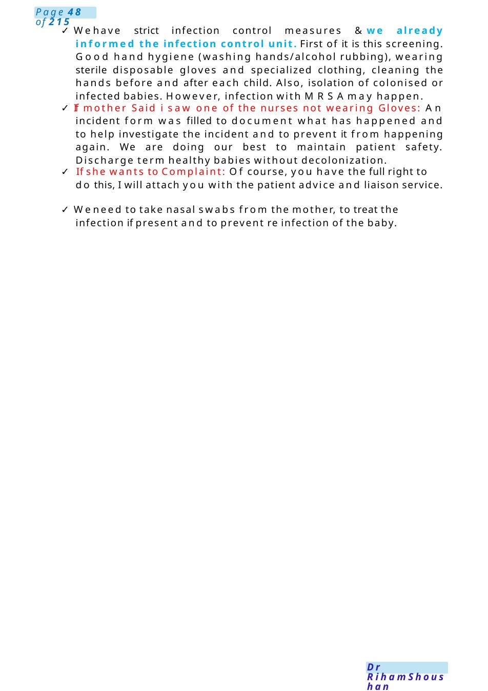

MRSA
Scenario 1: Please speak to a mother whose daughter is on the NNUand was about to be discharged but has been found to have MRSA+ve skin swab. Scenario 2: Please speak to a mother whose daughter was recently transferred from another hospital, and the skin swab came positive for MRSA.
Scenario Summary
Scenario 1: Please speak to a mother whose daughter is on the NNUand was about to be discharged but has been found to have MRSA+ve skin swab. Scenario 2: Please speak to a mother whose daughter was recently transferred from another hospital, and the skin swab came positive for MRSA.
Full Original Scenario

MRSA
Scenario 1: Please speak to a mother whose daughter is on the NNUand was about to be discharged but has been found to have MRSA+ve skin swab.
Scenario 2: Please speak to a mother whose daughter was recently transferred from another hospital, and the skin swab came positive for MRSA.
Points to consider:
- Inform the mother about the incident/ test result (in a sandwich technique =good/bad/good)
- Sorry with or without Apology accordingly
- What MRSAis
- How/Whywe are taking swabs - Howmanagement will be
- Infection Control Measures in Our unit
- Our intervention: Incident Reporting
- PALS
- Mother testing
- I amhere to discuss with you about the health condition of ....... She is doing well; we have done a skin swab test for ....and it came +ve for a bug called MRSA,and we are working on this.
- I amsorry for this, and I apologize on the behalf of myteam for the incident.
- Staphylococcal Aureus is a bug which is naturally present on the skin and nose of healthy people and do colonization.
Mostof its types is harmless, but sometimes, it maycause illness. This illness ranges from minor skin boils to serious affection of internal body organs. One of its types is this Methicillin Resistant Staphylococcal Aureus which has become unresponsive to usual antibug.
- Hence, we are routinely doing this skin swabtests to early detect and treat MRSAand to prevent its transmission to other babies. Wetake swabs from the baby’s nose, throat and belly buttom, and send themfor laboratory testing. If the test came+veit does meanthat the baby is a carrier of this bug and should be treated even without being ill.
- The baby will be isolated in a separate room, given antibug cream mupirocin that will be applied inside the nose three times a day. The baby will be washed daily with an antiseptic e.g., chlorhexidine or actinidine for 5 days. The baby will be closely monitored for any developing illness. Then the swab will be checked again after 48 h to determine the effectiveness of treatment. Successful eradication can be assumed if 3 consecutive swabs taken at 3–7-dayintervals are negative.

- Wehave strict infection control measures &we already informed the infection control unit. First of it is this screening. Good hand hygiene (washing hands/alcohol rubbing), wearing sterile disposable gloves and specialized clothing, cleaning the hands before and after each child. Also, isolation of colonised or infected babies. However, infection with MRSAmay happen.
- If mother Said i saw one of the nurses not wearing Gloves: An incident form was filled to document what has happened and to help investigate the incident and to prevent it from happening again. We are doing our best to maintain patient safety. Discharge term healthy babies without decolonization.
- If she wants to Complaint: Of course, you have the full right to do this, I will attach you with the patient advice and liaison service.
- Weneed to take nasal swabs from the mother, to treat the infection if present and to prevent re infection of the baby.

DNR– HIEwith Brainstem Death (Ethical Dilemma)
Task: Talk to Ghadeer. She is a 4th year medical student. Yesterday, she attended the consultant’sweekly meeting; the discussion was about a 6 months old infant in the PICU unit; he had a severe degree of HIE and was determined as a brainstem death; the decision was to discontinue ventilatory support and not to resuscitate him; the consultant discussed this with his parents. - Ghadeer was frustrated about this; she was angry that it is unethical “to kill this child” by stopping ventilatory support.
- Task: Talk to Ghadeer and explain to her the ethics of this and address her concerns.
- Goodmorning.
- Goodmorning doctor.
- Myname is Dr -----, nice to meet you today.
- Thanks Doctor. - Before westart, are you waiting for any colleague to attend or shall westart?
- N.B: if the child’s name is clarified in the scenario, don’t ask about the attender not to break the confidentiality of his records.
Important points in this scenario:
1- Ethical dilemma definition
2- Rules of ethical dilemma
3- HIE
4- Brainstem Death
5- Whotakes the decision
- I totally understand your worries and I appreciate your feelings; actually, it is one of the most difficult situations wecan meet in our career.
- It is an ethical dilemma; I hope that weget to the point at the end of our conversation. Feel free to ask any question.
- The idea of the consultant to talk with parents about discontinuing ventilatory support for this child?
- In this situation, we don’t have something definitely right or definitely wrong, no black and white which wecall it Ethical Dilemma.
- Fortunately, there is rules (Autonomy, waythe benefits against risk, what is the best interest for the child and Justice) that guide us towards the correct decision for the best interests of the child and the family.
- The first rule is Autonomy; are you familiar with this term?